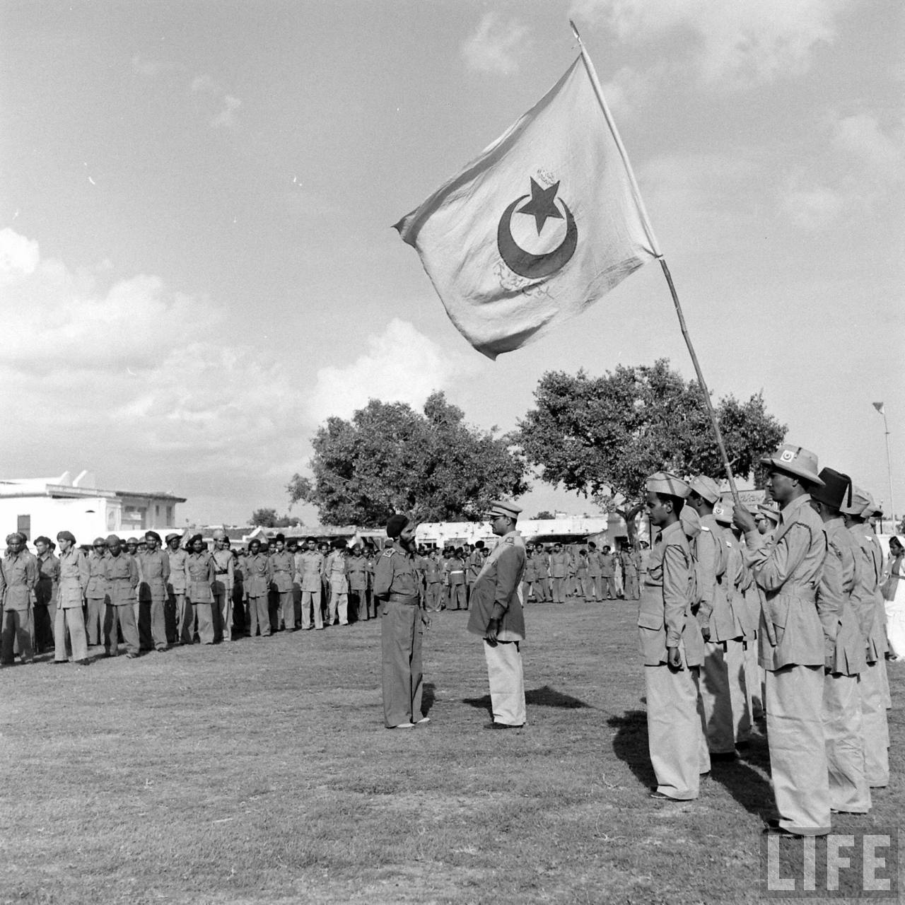
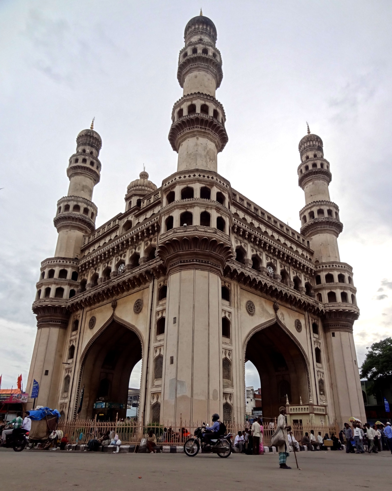
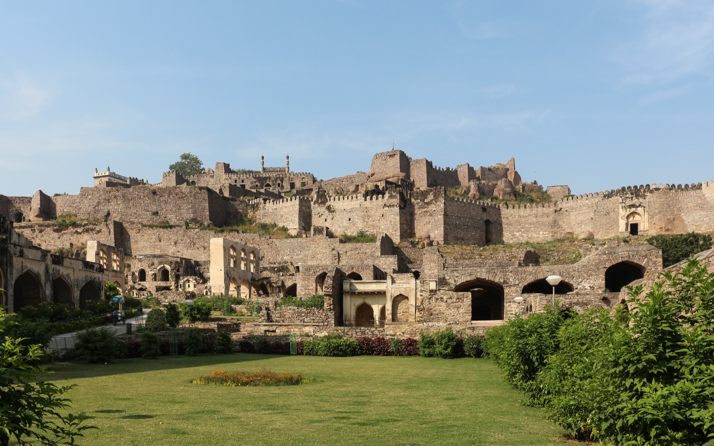
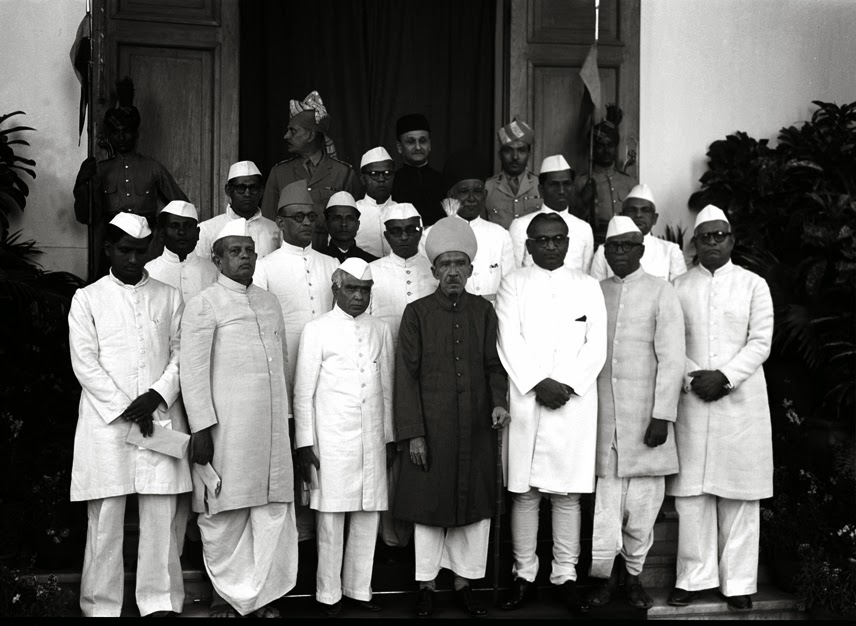
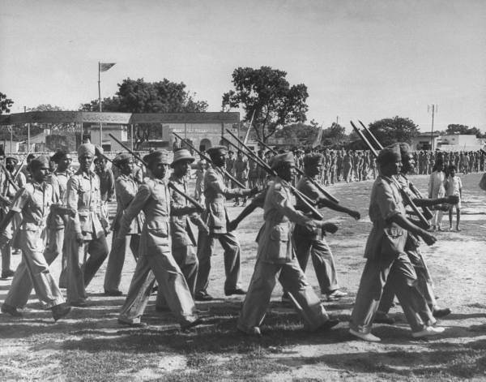
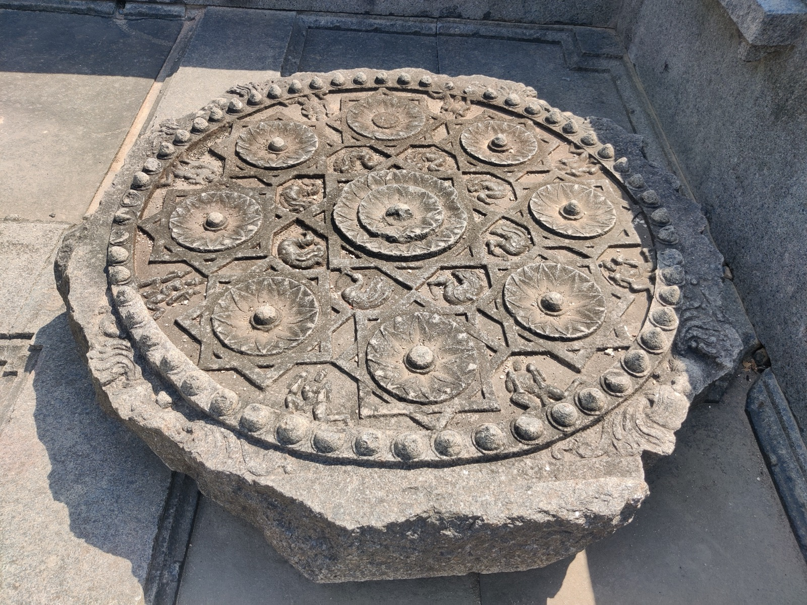
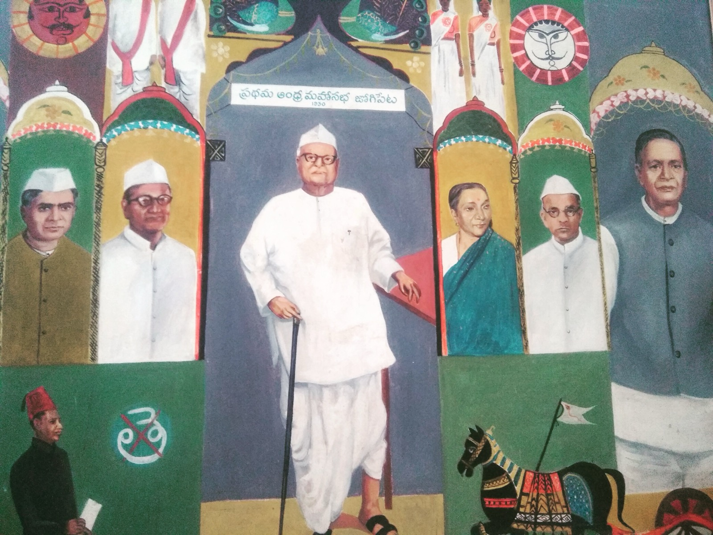
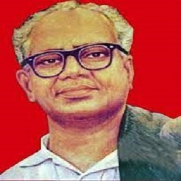
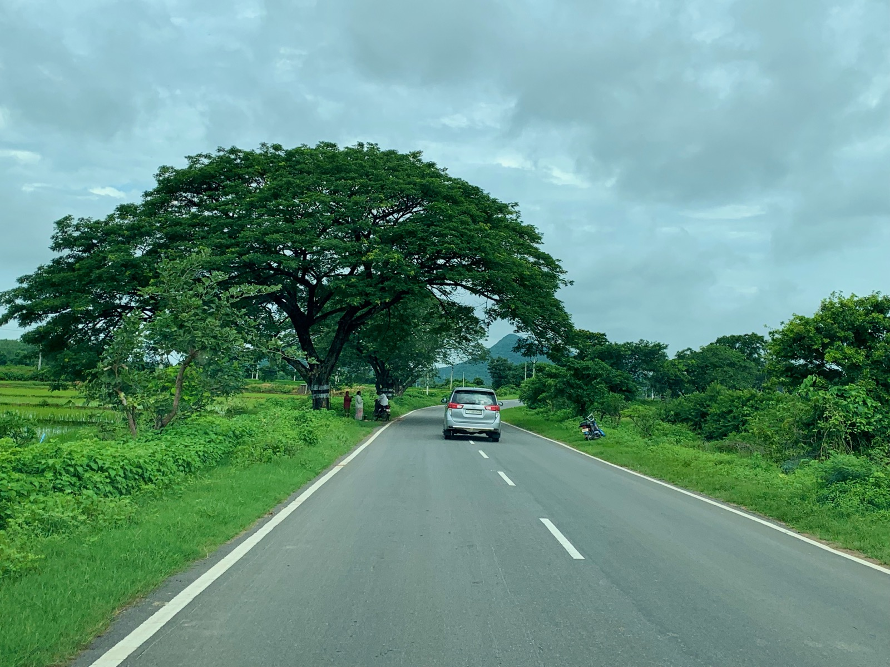

Golconda & the Asaf Jahs
The dynasty of the Nizams descended from the Mughal viceroys of the Deccan, ruling from Hyderabad city beneath the ruins of Golconda Fort — the celebrated diamond fortress of the Qutb Shahis.
"Vettichakiri Virodham!" — No more forced labour.
Under the Nizam of Hyderabad, the largest princely state in India, the peasantry of Telangana worked the fields of jagirdars and doras in the grip of vetti — forced, unpaid labour. In the winter of 1946 the villages of Nalgonda said no. Their revolt became the Telangana Armed Struggle: the seizure of jagir lands, the resistance to the Razakars, the guns of the dalams, the tanks of Operation Polo, and one of the largest peasant uprisings in modern Indian history.
The largest, richest and most autocratic princely state in India — the world the peasants of Telangana rose against.
Hyderabad was the premier princely state of India — roughly 82,000 square miles of the Deccan plateau, with a population of over 16 million at the census of 1941. Ruled since 1724 by the Asaf Jahi dynasty, it was dominated in these final decades by its seventh Nizam, Mir Osman Ali Khan (Asaf Jah VII), whose reign from 1911 to 1948 made him the richest man in the world in the eyes of Time magazine. Hyderabad was in practice a sovereign state: it struck its own currency, ran its own railways and post office, maintained its own army, and flew its own flag.
The Nizam held the style of "Faithful Ally of the British Government" — the reward of a loyalty that dated to 1798, when the Asaf Jahs made their first subsidiary alliance with the East India Company. Under the Paramountcy of the Raj, the British guaranteed the Nizam's throne while turning a blind eye to how the interior of his state was governed. Telangana — the Telugu-speaking eastern districts of the Nizam's dominions — was among the most feudal regions of India, where the authority of the state itself barely reached the villages.
When the British announced in 1946 that paramountcy would lapse at independence, the Nizam hesitated between independence, association with Pakistan, and accession to India. That hesitation — and the state's refusal to accede — set the stage for the stand-off that followed.
The dynasty of the Nizams descended from the Mughal viceroys of the Deccan, ruling from Hyderabad city beneath the ruins of Golconda Fort — the celebrated diamond fortress of the Qutb Shahis.
Hyderabad minted the Hyderabadi rupee, printed its own postage, ran its own railways and air force, and was bound to Britain only by the loose tie of paramountcy — not by the British provinces around it.
In 1946 the British announced that with independence their treaty relations with the princely states would lapse. Hyderabad would have to choose its future — and it chose to wait, then to refuse.
Telangana — from the Telugu trilinga desa, the land of three lingas — covered the eastern districts of the state: the red-earth and tank-irrigated country of Nalgonda, Warangal and Khammam.
Land was scarce, tenancy layered, and the harvest flowed upward to a class that neither sowed nor reaped.
"The jagirdars, deshmukhs and doras of Telangana collected the grain, commanded the labour, and owned the law of the village. Beneath them the cultivator kept as little of the harvest as the landlord allowed — and gave his service, and sometimes his family, without a rupee."
The jagirdars were the titled nobility of the Nizam's state — about a thousand estates, from great paigah nobles who were princes in all but name to minor samanthas holding a village or two. A jagir was a grant of the revenue of land, made by the Nizam in return for service; the jagirdar was the revenue-farmer, magistrate and lord of his territory. In the 1940s many jagirdars were also the creditors and sometimes the slave-masters of their tenantry.
In the revenue villages the dominant figures were the deshmukhs — big landlords of the northern country, often Velama and Reddy gentry who held land and office — and the doras, the local lords of Nalgonda and Khammam. They collected the revenue, employed the vetti, and treated the villagers as their people. Against them, above all, the peasant movement of 1946 would first turn.
Every peasant of Telangana could recite the catalogue of wrongs — the services demanded, the shares taken, the bonds that never ended.
The defining grievance. Villagers were compelled to work for the landlord without wages — ploughing, carrying loads, building his house — and women were summoned for household and, all too often, sexual service. Vettichakiri was the system the first slogan of the movement named.
Half or more of the crop as rent; seed and bullocks supplied by the tenant; a host of illegal exactions at sowing, harvest and festival — the bandi, the birt, the grain "gifts" the landlord claimed as his due.
Rural credit ran through the landlord. Debts were passed from father to son, and the debtor and his family worked off the interest for generations — a servitude enforced by custom and by the landlord's men.
Landlords encroached on village commons and on the fields of the poor, often "resettling" land their debtors could not hold. By the 1940s, landless labour had become the fate of a large part of the peasantry.
In the memory of the movement, vetti was not just labour — it was the emblem of the whole order. A landlord could summon a woman of the village to grind his grain or nurse his household, and custom gave the husband no answer. When the peasants of Telangana refused vetti, they were refusing not one exaction but the entire logic of the countryside: that the tiller was the landlord's man, to command, to borrow from and to own.
Three currents met in Telangana — the cultural nationalism of the Andhra Mahasabha, the revolutionary communism of the CPI, and the state nationalism of the Hyderabad Congress — set against the Ittehad of the Nizam.
Founded in 1928 as a cultural forum of the Telugu-speaking people of Hyderabad state, the Mahasabha became the political school of the peasant movement. From the 1930s it took up the grievances of the ryots, and by 1946 its rural cells had become the organizational skeleton of the struggle.
Communist cadres — many of them students and urban intellectuals returned to their villages — built the dalams and led the seizure of land. Leaders such as Ravi Narayana Reddy, Baddam Yella Reddy and Devulapalli Venkateswara Rao gave the peasant revolt its strategy.
Led by Swami Ramanand Tirtha, the State Congress fought the Nizam for civil liberties and accession to India. Its city-based satyagrahas ran parallel to, and at moments intersected with, the rural armed struggle of the villages.
The Ittehad championed Muslim supremacy in Hyderabad and, from 1946 under Kasim Razvi, mobilized the Razakar volunteers. It stood for an independent Hyderabad under the Nizam — and against every peasant, Congress and communist organization in the countryside.
The Andhra Mahasabha of 1946 was not the cultural society of 1928. Its conferences at Devarakonda, Nalgonda and across the district drew tens of thousands of peasants; its resolutions named vetti, named the jagirdars, and pointed to the land. When the state responded with police and the landlords with goondas, the movement answered with the squad — and the peasants of Telangana began to govern their own villages.
The paramilitary volunteers who gave the Nizam's refusal to join India its violent edge — and whose outrages hardened the countryside against the state.

Razakar volunteers of the Majlis-e-Ittehadul Muslimeen — the militia of an independent Hyderabad.
The Razakars — the "volunteers" — were raised by the Majlis-e-Ittehadul Muslimeen. Under Kasim Razvi, who took command in 1946, they swelled into a mass militia pledged to the cry "We will rule this land for a thousand years" and to the demand that Hyderabad remain independent, an Islamic state under the Nizam. Arms were distributed, camps were run, and the volunteers were drawn into villages across Telangana and the Marathwada and Karnataka regions of the state.
Their work was terror. Hindu villagers — and above all the peasant organizers of the Andhra Mahasabha — were beaten, looted, killed and in many districts forced to convert. The movement of Telangana, which had begun as a rising against the landlords, was thus fused with a rising against the state itself: to be a peasant rebel was to be a target of the Razakars, and to resist the Razakars was to fight the Nizam.
Estimates of the Razakar atrocities are contested, but the record of murders, abductions and the burning of villages is beyond dispute. It was this, reported across India, that turned public opinion — and the government of Sardar Patel — firmly toward intervention.
The Telangana peasantry thus faced a double oppression: the feudal exactions of the landlords, and the communal terrorism of the Razakars. The armed squads of the movement answered both — raiding the estates of jagirdars, and defending villages against the volunteers. In many districts the two struggles fused into one: a peasants' war against the entire edifice of the Nizam's state.
Whole belts of Nalgonda, Warangal and Khammam passed through Razakar raids in 1947–48. Leaders were hunted; the movement's own estimates recorded thousands killed by Razakar violence. The terror, intended to break the peasant movement, instead drove it deeper into armed resistance — and delivered to Delhi the moral case for the Police Action.
It began not with a manifesto but with a refusal — in the jagir villages of Nalgonda district in the summer of 1946.
"We will no longer work for nothing. We will no longer carry your palanquin, or grind your grain, or send our women to your house. The land you hold is ours to till — and we will keep what we grow."
The movement is traditionally dated from the rising in the village of Kadivendi in Nalgonda district, where peasants led by the Andhra Mahasabha and the communists seized the lands of the local jagirdar, refused vetti, and set up their own village committees. From Nalgonda the refusal spread through the district and into Warangal and Khammam — the red-earth country of tanks and cotton fields where the jagirdars' grip was heaviest.
Where the movement triumphed, the peasants did not stop at seizing land. They abolished vetti by resolution, established their own gram rajyams — village councils — and in thousands of villages the authority of the jagirdar and the state gave way to the committees of the movement. By 1948 the "liberated" and "guerrilla" zones covered large parts of the three Telangana districts, with an estimated 2,500–3,000 villages touched by the struggle at its height.
The dalams — the armed squads of the movement — began with lathis and country weapons and graduated to guns seized from landlords, police and the Razakars. Young men and women of the villages, often barely literate, became the military arm of the committees, protecting the harvest, punishing informers and landlords, and holding the state's police at bay.
From the founding of the Mahasabha to the state of Telangana — the events that made the movement, and the movement that outlived itself.
Nizam-ul-Mulk establishes the Asaf Jahi dynasty as de facto ruler of the Deccan. The princely state of Hyderabad is born, to grow into the largest in India.
Telugu-speaking intelligentsia of Hyderabad state found the Andhra Mahasabha to promote language and culture. Within a decade it becomes the political voice of the Telangana peasantry.
Communist cadres return from the cities to organize the peasantry, carry out relief and literacy work, and begin the systematic agitation against vetti and jagirdari that the Mahasabha will take up as policy.
London announces that the treaties binding the princely states to the crown will lapse at independence. The Nizam refuses to commit to India, and the Ittehad's Razakars mobilize under Kasim Razvi.
Peasants of Nalgonda district, led by the Mahasabha and the communists, seize jagir land and refuse vetti. The Telangana Armed Struggle begins in the villages of the district.
India and Hyderabad sign a one-year Standstill Agreement governing communications and defence. The Nizam still refuses accession; the Razakars intensify their raids on the villages.
The Communist Party of India's second congress at Calcutta adopts an insurrectionary line. In Telangana the dalams are strengthened and the movement moves toward guerrilla warfare against the state.
The Indian Army enters Hyderabad in the "Police Action." The Razakars and the Hyderabad forces are overwhelmed in days; the Nizam surrenders on 17 September. The princely state is no more.
The movement, refusing to lay down arms, now fights the Indian administration in Telangana. Military operations and the arrest of leaders grind down the guerrilla zones over three years.
Facing the general elections of 1951–52, the Communist Party of India calls off the armed struggle and brings the Telangana movement into parliamentary politics.
The Jagir Abolition Regulation (1949) and later tenancy laws dismantle the jagirdari order the movement rose against. In 1956 the Telugu districts of Hyderabad merge with Andhra to form Andhra Pradesh.
After a long statehood movement that repeatedly invoked the memory of the armed struggle, Telangana is created on 2 June 2014 — the movement's countryside, at last, its own state.
Hyderabad State and the Telangana districts — the capital of the Nizam, the villages of the movement, and the country over which the tanks of 1948 rolled. Select a marker to explore.
After a year of negotiation, blockade and Razakar terror, the government of independent India ended the question of Hyderabad by force.
Between the Standstill Agreement of November 1947 and September 1948, India and Hyderabad slid toward confrontation. The Nizam sought arms and debated accession to Pakistan; India imposed an economic blockade, cutting the landlocked state off from supplies. Sardar Vallabhbhai Patel, the Home Minister, and V. P. Menon pressed for action; Lord Mountbatten, the Governor-General, was won over in June 1948. The crisis became a question of national prestige and internal security.
On 13 September 1948, the Indian Army launched Operation Polo — the "Police Action" — under Major General J. N. Chaudhuri. Columns advanced from the north, west and south into Hyderabad. The Hyderabad State forces and the Razakars, poorly armed and outnumbered, collapsed in days. The Nizam surrendered on 17 September 1948; the operation formally closed on the 18th. Hyderabad had been made part of the Indian Union by arms, in five days.
The Nizam was retained as Rajpramukh, General Chaudhuri became Military Governor, and Hyderabad was integrated as a state of India. The 224-year history of the Asaf Jahi state was over. Yet the ending of the Nizam's rule did not end the armed struggle in the villages — the movement of Telangana now turned its guns against the very government that had "liberated" it from the Nizam.
The movement had risen against the Nizam and the jagirdars. After 1948 it found itself fighting the Indian state in the name of the peasants it had organized.
The communists had welcomed the Police Action, expecting land reform from Delhi. When the Indian administration instead moved against the gram rajyams, the movement's leadership in 1948–49 launched guerrilla warfare against the Indian military. The "Telangana war" of 1949–51 was fought from the forests and villages of Nalgonda, Warangal and Khammam, with the movement at its height controlling liberated zones and maintaining its own courts and administration.
The Indian government answered with a major military deployment. The movement's zones were ground down through 1950–51, leaders were captured or killed, and the party's command structure in the region was broken. Facing the coming elections, the CPI's leadership withdrew the struggle in October 1951. The armed phase of Telangana was over — though the memory of the "people's war" would outlast it.
The movement and its suppression cost thousands of lives. Communist sources counted some 4,000 peasants and organizers killed; official and independent accounts give other figures, and the exact toll is contested. What is beyond contest is the scale: for five years, in the largest peasant armed struggle of modern India, the villages of Telangana had defied first the Nizam, then the Razakars, then the Indian army — and in doing so had shaken the countryside's feudal order to its foundations.
Land reform, a new state, and a memory that still divides — the long afterlife of the Telangana struggle.
The most immediate achievement: the government of the new state abolished the jagirdari system (Jagir Abolition Regulation, 1949), and later the tenancy legislation of Hyderabad and Andhra Pradesh dismantled much of the feudal order the struggle had risen against.
See the wider march to 1947The Telugu districts of Hyderabad merged with Andhra in 1956 to form Andhra Pradesh. The statehood movement that followed — in 1969 and again from the 2000s — repeatedly invoked the armed struggle's memory, and Telangana became a state in 2014.
Visit the Freedom Movement ExplorerTelangana was the Communist Party of India's greatest experiment in armed struggle — and the source of its bitterest debate. Its lessons fed the later Naxalite movement and shaped the party's turn to parliamentary politics in the 1950s.
Compare with the Tebhaga MovementWomen joined the movement in striking numbers, carrying messages, guarding the villages and serving in the dalams. Their participation — and the movement's promise of dignity against vetti — became part of Telangana's political memory.
Visit the Women's Participation ExplorerMonuments, memorials and museums in Nalgonda and the surrounding districts honour the struggle; statues of Sundarayya and other leaders stand across Telangana. The movement is a living subject of Telangana's politics and public memory.
Visit the Freedom Fighters HubWas the Telangana struggle a peasant war, a communist insurrection, or a war of liberation? The debate over its nature and its legacy remains open — between Delhi's memory of the Police Action and the villages' memory of their own rising.
Read the interpretationsThe Telangana armed struggle has been read through many lenses — nationalist, communist, official and academic — and each reading has shaped how India remembers it.
For the Indian government and mainstream nationalist history, the story of 1948 is the liberation of Hyderabad: Operation Polo ending the tyranny of the Nizam and the Razakars, and the integration of the last great princely state. In this telling the peasant movement appears as part of the freedom struggle — its heroism folded into the achievement of Sardar Patel.
For the left, the Telangana struggle is a people's war — the greatest peasant insurrection in Indian history, a revolt of the oppressed against feudalism, caste and forced labour. P. Sundarayya's Telangana People's Struggle and Its Lessons (1972) is its canonical text, at once proud of the struggle and self-critical of its failure.
Loyalists of the Nizam and the Ittehad remembered the struggle as an externally-fed revolt — a communist and Congress conspiracy to destroy the Muslim-ruled state of Hyderabad. The Razakars, in this account, were defenders of the state against a rebellion armed by India.
Historians of the peasantry — Barry Pavier, Inukonda Thirumali and others — have read the struggle from the villages upward: as an agrarian revolt of caste and class against the vetti order, whose participants were moved less by party doctrine than by land, dignity and the memory of forced labour.
Constitutionalist and liberal historians question both extremes: the armed struggle's violence against landlords, and the insurrectionary "left adventurism" of the CPI's 1948 line that, in their reading, sacrificed a reform movement to revolutionary rhetoric and cost the peasantry dearly.
In Telangana's own regional memory — revived by the statehood movement — the struggle is the founding story of the region: the moment its people, against Nizam, Razakar and then the Andhra-dominated state, first claimed their own land and their own identity.
The Telangana armed struggle refuses a single telling. It is at once a peasant war and a communist insurrection, an anti-feudal rising and an anti-state rebellion, a national event and a regional memory. Its villages rose against vetti and jagirdari; its guns met the Razakars and then the Indian army; and its meaning is still contested between Hyderabad, New Delhi and the red-earth country that carried it.
Fortresses, villages and faces — the landscapes of the Nizam's Hyderabad and the memory of the struggle.








The memoirs, studies and records from which this account of the Telangana armed struggle is drawn.
Telangana People's Struggle and Its Lessons, Communist Party of India (Marxist). The canonical first-hand account of the movement by its principal leader — at once a proud chronicle and a critical assessment. Read about the author
Against Dora and Nizam: People's Movement in Telangana 1939–1948. A scholarly study of the movement's growth from the Andhra Mahasabha to the armed rising, read from the villages of Telangana.
The Telangana Movement, 1944–51. An academic account treating the struggle as an agrarian revolt and debating the relationship between the peasant movement and the communist party.
The Indian government's account of the Police Action of 1948 — the official record of the military intervention and integration of Hyderabad, from the standstill agreement to the Nizam's surrender.
The imperial and later Hyderabad gazetteers document the jagirdari and revenue systems of the state — the administrative architecture of the feudal order the movement rose against.
Telangana Rebellion, Razakars (Hyderabad) and Operation Polo — general references for the chronology, the violence, and the interpretations of the struggle. Read the articles
The Social Structure of the Countryside
A pyramid of privilege from the Nizam's court to the landless labourer — each layer living off the toil and the forced service of the one below.
Jagir and Peshkashi
The Nizam's dominions were divided into two kinds of country. In the jagir villages — around a third of Telangana — the land belonged in effect to the jagirdar, exempt from direct state revenue, and the peasant enjoyed no protection from the state at all. In the peshkashi villages revenue went to the government, but the village was still dominated by its deshmukh, dora or patel. Whether the master was titled or not, the peasant at the bottom faced the same structures of rent, debt and forced service.
Who Held the Whip
Authority ran from the Nizam's court in Hyderabad to the jagirdars, and from the jagirdars through the deshmukhs and doras to the village headmen. The landlords held police powers, settled disputes, controlled the wells and the markets, and commanded the vetti — the right to free labour. The peasant's world was one of vertical dependence: the landlord was law, creditor, market and master in a single person.